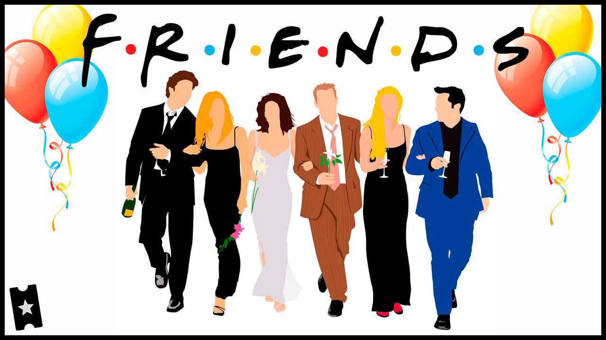

Friends (estilizado F·R·I·E·N·D·S) es una serie de televisión estadounidense creada y producida por Marta Kauffman y David Crane. Se emitió en la NBC desde el 22 de septiembre de 1994 hasta el 6 de mayo de 2004. En el ámbito hispanohablante es conocida como Amigos en Hispanoamérica y Friends en España.
La serie trata sobre la vida de un grupo de amigos —Chandler Bing, Phoebe Buffay, Monica Geller, Ross Geller, Rachel Green y Joey Tribbiani— que residen en Manhattan, Nueva York. Suceden tanto buenos como malos momentos, pero con una crítica cómica a los hechos más trascendentales de la actualidad. Friends es una comedia de situación que trata temas del mundo real, a través del humor y de las risas, una oda divertida a la risa, a la amistad, el amor y la vida en la lucha dura por salir adelante a través de lo personal y lo profesional, en la que se nos recuerda que con buenas personas a nuestro lado vamos a estar bien.
Inmediatamente después del éxito en su país, el programa comenzó su difusión por todo el mundo con similares resultados.
En marzo de 2019, fue considerada por The Hollywood Reporter como la mejor serie de la historia, siendo también votada en 2018, según Ranked, como la mejor comedia de situación de todos los tiempos.
La serie tiene diez temporadas de unos 24 capítulos cada una —salvo la tercera y sexta temporada, que tuvieron 25 episodios, y la última, que tuvo 17 capítulos—.[3] Una vez finalizada, se rodó Joey, una secuela sobre la vida del personaje homónimo en Los Ángeles. También tuvo un breve cruce con la serie Mad About You, cuando Jamie y Lisa entraron en Central Perk y confundieron a Phoebe Buffay con su hermana gemela Ursula.
Los miembros del elenco regresaron para un especial de reunión que se estrenó en HBO Max, el 27 de mayo de 2021. La duración del episodio fue de 104 minutos.